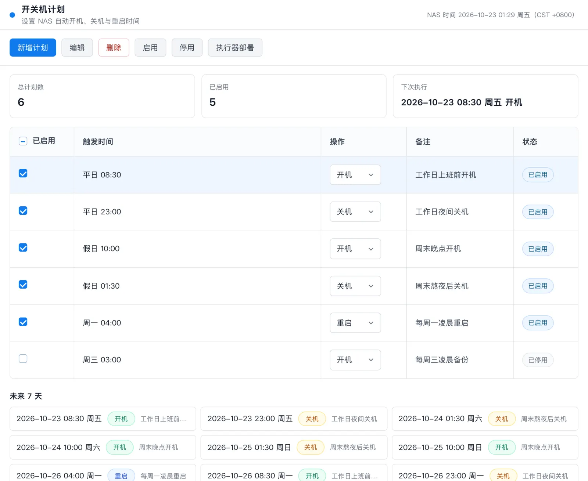
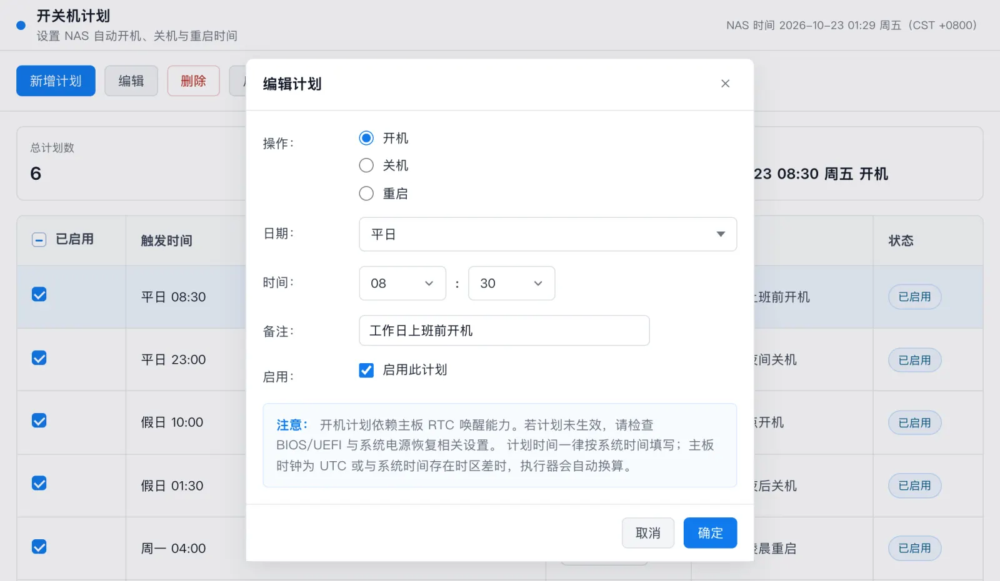
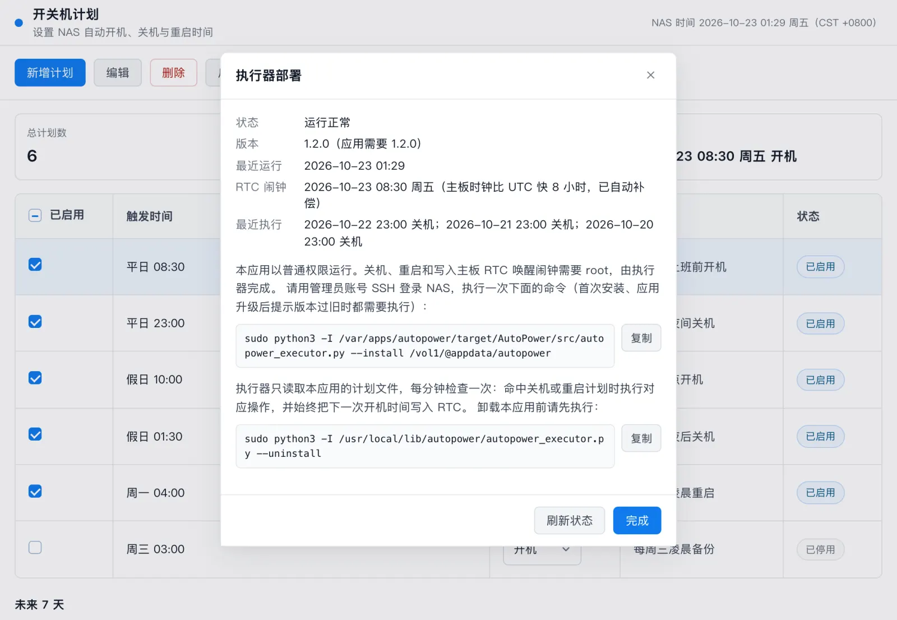

三种操作
新增、编辑、删除、启用、停用开机、关机或重启计划，每条计划可添加备注。
飞牛 fnOS 应用 · MIT 开源
为 NAS 设置定时开机、定时关机和定时重启：工作日早上自动开机、深夜自动关机，周末按另一套时间执行。定时开机通过主板 RTC 唤醒实现，关机和重启由系统定时任务执行。
v1.4.2 · 不确定架构时 SSH 执行 uname -m · SHA256 校验文件
新增、编辑、删除、启用、停用开机、关机或重启计划，每条计划可添加备注。
每天、平日（周一至周五）、假日（周六、周日）或指定星期。
首页显示下一次执行时间，以及未来 7 天的执行预览。
同一时间既开机又关机、既关机又重启，或计划重复时给出提示。
关机（包括手动关机）前自动把下一次开机时间写入主板 RTC。
主板时钟走 UTC 或本地时间都能正确唤醒：执行器测量 RTC 与系统时间的偏差并自动补偿。
界面显示执行器运行状态、RTC 闹钟时间和最近的关机、重启记录。



应用以普通权限运行，只编辑计划。关机、重启和写主板 RTC 闹钟需要 root，由管理员部署一次的独立执行器完成。
Intel / AMD 处理器选 x86 版，ARM 处理器选 ARM 版。SSH 执行 uname -m：输出 x86_64 选 x86，输出 aarch64 选 ARM。x86 已实机验证，ARM 尚未实机验证。
在飞牛「应用中心 → 手动安装」上传安装包。
打开应用，点「执行器部署」，复制部署命令，用管理员账号 SSH 登录 NAS 执行一次。实际命令以应用内显示的为准（数据目录因安装卷而异）。
sudo python3 -I /var/apps/autopower/target/AutoPower/src/autopower_executor.py --install <数据目录>在 BIOS/UEFI 中开启 RTC 唤醒（不同主板叫 Resume by RTC Alarm、Wake on RTC 等）。定时关机和重启不依赖这一步。
应用升级后界面提示“执行器版本过旧”时，重新执行一次部署命令即可。卸载应用前先在「执行器部署」中复制卸载命令执行。
重绘应用图标：电源符号居中，64 像素图标按像素网格绘制，外形与飞牛系统图标一致。执行器无变化。
修复弹窗在窗口高度不够时底部被遮挡、手机上弹窗打开时带动列表滚动、星期下拉层盖住「重启」选项。
新增定时重启；同一时间存在不同操作时给出冲突提示；修复全新安装失败（错误码 10237）。执行器升级到 1.2.0，需要重新部署。
分 x86 与 ARM 两个安装包并附 SHA-256 校验；新增计划备注、未来 7 天预览和冲突提示；时间统一按 NAS 系统时区显示，跨夏令时也正确。